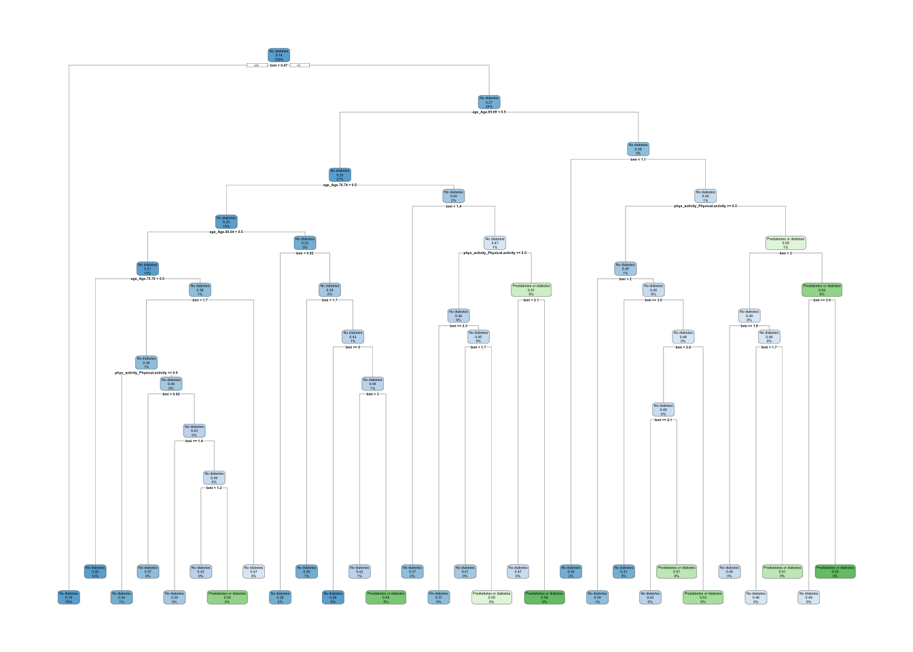

#Loading packages
library("tidyverse")
library("tidymodels")
library("caret")
library("yardstick")
library("baguette")Modeling
Before beginning to create models, it is important to load the necessary libraries!
It is also important to load in and clean the data.
#Reading in the data
diabetes_data <- read.csv("diabetes_binary_health_indicators_BRFSS2015.csv")#Selecting response and 3 chosen explanatory variables
#Converting categorical variables from numeric variables to factor variables
diabetes_select <- diabetes_data |>
rename("diabetes_resp" = Diabetes_binary) |>
rename("bmi" = BMI) |>
rename("phys_activity" = PhysActivity) |>
rename("age" = Age) |>
mutate(diabetes_resp = factor(diabetes_resp, levels = c(0, 1), labels = c("No diabetes", "Prediabetes or diabetes"))) |>
mutate(phys_activity = factor(phys_activity, levels = c(0, 1), labels = c("No physical activity", "Physical activity"))) |>
mutate(age = factor(age, levels = c(1, 2, 3, 4, 5, 6, 7, 8, 9, 10, 11, 12, 13), labels = c("Age 18-24", "Age 25-29", "Age 30-34", "Age 35-39", "Age 40-44", "Age 45-49", "Age 50-54", "Age 55-59", "Age 60-64", "Age 65-69", "Age 70-74", "Age 75-79", "Age 80 or older"))) |>
mutate(HvyAlcoholConsump = as.factor(HvyAlcoholConsump)) |>
mutate(AnyHealthcare = as.factor(AnyHealthcare))Introduction
In this project, I am analyzing data on diabetes. These data are a subset of the Behavioral Risk Factor Surveillance System (BRFSS) which is an annual telephone survey conducted by the Centers for Disease Control (CDC). This subset includes responses from 253,680 people and was collected in 2015. This dataset contains information on whether the person does not have diabetes or if they have either pre-diabetes or diabetes, in addition to other numeric and categorical health indicators. There are binary, indicator variables describing whether or not the person has a history of high blood pressure, high cholesterol, smoking, stroke, coronary heart disease (CHD) or myocardial infarction (MI), physical activity in the past 30 days, daily fruit consumption, daily veggie consumption, alcohol consumption, healthcare coverage, missing medical care due to cost, and difficulty walking.
In the EDA, I chose to focus on 3 explanatory variables in particular (BMI, physical activity, and age) based on information from a CDC article published in 2024. In modeling, I will expand the variables I examine to include other potential factors. I wanted to choose factors that may capture new elements of a person’s overall health. That is, I wanted to pick variables where I wouldn’t necessarily expect to see strong correlations with BMI, physical activity, or age. I added the variables for heavy alcohol consumption and healthcare access. My goal is that the models I create will indicate whether the factors mentioned in the CDC article are sufficient to predict a diabetes diagnosis or if additional, new measures are also informative.
Modeling
Splitting Data into Training and Testing
The first step for modeling is to split data into training and testing sets. This allows us to create models using one set of data and then test those models on another, different set of data. This helps us make sure that our model is can actually predict patterns in the data rather than just inform us about the characteristics of the data we trained it on. In this case, we are splitting the data 70/30. This provides us a majority of the data to train on, which is useful because our model will be more informed, while it also leads sufficient data to test on.
set.seed(1234) #setting seed to allow for exact replication of the random selection used to split the data
diabetes_split <- initial_split(diabetes_select, prop = 0.70) #specifying a 70/30 split
diabetes_train <- training(diabetes_split) #splitting training data
diabetes_test <- testing(diabetes_split) #splitting testing dataIn addition to splitting the data into training and testing, we also use 5 fold cross validation. This allows us to use all of our data as both part of the training set and as part of the testing set, which helps us extract the most information and use from the data. In a 5 fold cross validation, 4 folds are used as training data and 1 fold is used as testiing data.
diabetes_folds <- vfold_cv(diabetes_train, 5) #creating 10 fold CV of the training dataLogistic Regression Models
The first type of model we will use is a logistic regression model. We use logistic regression models when the response variable is binary, as in this case where we have the responses 1 corresponding to pre-diabetes or diabetes and 0 corresponding to no diabetes, because there is no longer a continuous outcome that we are predicting. In that way, we can no longer predict the change in the outcome for a one unit increase in a predictor variable the way that we would in a linear regression. Instead, logistic regression allows us to predict the log odds and to interpret predictor variable coefficients for their impact on the log odds.
#Creating the spec for logistic models
LR_spec <- logistic_reg() |>
set_engine("glm")The first model I wanted to test includes all 5 predictors that I am curious about: BMI, physical activity, age, heavy alcohol consumption, and healthcare.
#Creating the first logistic model using all 5 predictors
#BMI, Physical Activity, Age, Heavy Alcohol Consumption, Any Healthcare
LR1_rec <- recipe(diabetes_resp ~ phys_activity + bmi + age + HvyAlcoholConsump + AnyHealthcare, data = diabetes_train) |>
#normalizing the numeric variables
step_normalize(bmi) |>
#creating dummy variables for the categorical variables
step_dummy(phys_activity, age, HvyAlcoholConsump, AnyHealthcare)
LR1_wkf <- workflow() |>
add_recipe(LR1_rec) |> #model 1 recipe
add_model(LR_spec) #logistic model spec
#finding the best coefficients for this model by resampling using 5 fold cross-validation
LR1_fit <- LR1_wkf |>
fit_resamples(diabetes_folds, metrics = metric_set(mn_log_loss))The second model I wanted to test includes 4 predictors (BMI, physical activity, heavy alcohol consumption, and healthcare access) but does not include the variable demographic variable age. I was curious whether demographics, which a person has less control over, play a role so I chose to create a model without them.
#Creating the second logistic model using non-Demographic predictors
#BMI, physical activity, heavy alcohol consumption, and healthcare as predictors
LR2_rec <- recipe(diabetes_resp ~ bmi + phys_activity + HvyAlcoholConsump + AnyHealthcare, data = diabetes_train) |>
#normalizing the numeric variables
step_normalize(bmi) |>
#creating dummy variables for the categorical variables
step_dummy(phys_activity, HvyAlcoholConsump, AnyHealthcare)
LR2_wkf <- workflow() |>
add_recipe(LR2_rec) |> #model 2 recipe
add_model(LR_spec) #logistic model spec
#finding the best coefficients for this model by resampling using 5 fold cross-validation
LR2_fit <- LR2_wkf |>
fit_resamples(diabetes_folds, metrics = metric_set(mn_log_loss))The third model I wanted to test includes only the 3 predictors I used in the EDA. I chose those 3 variables because they were mentioned in a CDC article about diabetes predictors. I am curious if this model performs better than the model with additional predictors, or if these three predictors are truly informative enough on their own such that adding more variables leads to overfitting.
#Creating the final logistic model using
#BMI, physical activity, and age as predictors
LR3_rec <- recipe(diabetes_resp ~ bmi + phys_activity + age, data = diabetes_train) |>
#normalizing the numeric variables
step_normalize(bmi) |>
#creating dummy variables for the categorical variables
step_dummy(phys_activity, age)
LR3_wkf <- workflow() |>
add_recipe(LR3_rec) |> #model 3 recipe
add_model(LR_spec) #logistic model spec
#finding the best coefficients for this model by resampling using 5 fold cross-validation
LR3_fit <- LR3_wkf |>
fit_resamples(diabetes_folds, metrics = metric_set(mn_log_loss))Now, we can compare the three models by comparing their log loss values.
rbind(LR1_fit |> collect_metrics(),
LR2_fit |> collect_metrics(),
LR3_fit |> collect_metrics()) |>
mutate(Model = c("Model1", "Model2", "Model3")) |>
select(Model, everything())# A tibble: 3 × 7
Model .metric .estimator mean n std_err .config
<chr> <chr> <chr> <dbl> <int> <dbl> <chr>
1 Model1 mn_log_loss binary 0.357 5 0.00192 Preprocessor1_Model1
2 Model2 mn_log_loss binary 0.379 5 0.00204 Preprocessor1_Model1
3 Model3 mn_log_loss binary 0.359 5 0.00182 Preprocessor1_Model1The log loss values displayed above show that logistic regression model 1 (which had all 5 predictor variables) is the best model since it has the lowest log loss. Interestingly, model 1 and model 3 have very similar log loss values while model 2 is higher. Model 2 removed the age variable, indicating that demographics, specifically age, are highly relevant to predicting diabetes diagnosis. The similarity between model 1 and model 3 leads me to hypothesize that the two additional variables I added (heavy alcohol consumption and healthcare coverage) are not very impactful when the original variables (BMI, physical activity, and age) are present. It seems like overall the CDC’s identification of important variables holds up. That said, I will still use the full model (model 1) since it is the best model overall as it has the lowest log loss.
Classification Tree
A classification tree contains a series of binary questions based on the value of predictor variables from a dataset. The series of binary split points will eventually lead to a prediction of the response variable. Classification trees are useful because they can be used with both categorical and numeric predictors, and they can help capture complicated relationships amongst variables In this case, our predictor variables are BMI, physical activity, and age and our response variable is whether or not a person has diabetes. I chose to use the original CDC variables model with just BMI, physical activity, and age to make the tree simpler and with less computation cost.
tree_rec <- recipe(diabetes_resp ~ phys_activity + bmi + age, data = diabetes_train) |>
#creating dummy variables for the categorical variables
step_dummy(phys_activity, age) |>
#creating dummy variables for the categorical variables
step_normalize(bmi, -all_outcomes())
tree_mod <- decision_tree(tree_depth = tune(), min_n = 200, cost_complexity = tune()) |>
set_engine("rpart") |>
set_mode("classification") #specifying a classification model
tree_wkf <- workflow() |>
add_recipe(tree_rec) |> #classification tree recipe
add_model(tree_mod) #classification tree model spec
#Creating a grid of 25 combinations of 5 different cost complexity and tree depth levels
tree_grid <- grid_regular(cost_complexity(),
tree_depth(),
levels = 5)
tree_fits <- tree_wkf |>
tune_grid(resamples = diabetes_folds, #resampling of the 5 cross validation folds
grid = tree_grid, #using the 25 combination grid from above
metrics = metric_set(mn_log_loss)) #specifying log loss as the metric
tree_fits |> collect_metrics()# A tibble: 25 × 8
cost_complexity tree_depth .metric .estimator mean n std_err .config
<dbl> <int> <chr> <chr> <dbl> <int> <dbl> <chr>
1 0.0000000001 1 mn_log_loss binary 0.404 5 0.00217 Prepro…
2 0.0000000178 1 mn_log_loss binary 0.404 5 0.00217 Prepro…
3 0.00000316 1 mn_log_loss binary 0.404 5 0.00217 Prepro…
4 0.000562 1 mn_log_loss binary 0.404 5 0.00217 Prepro…
5 0.1 1 mn_log_loss binary 0.404 5 0.00217 Prepro…
6 0.0000000001 4 mn_log_loss binary 0.396 5 0.00711 Prepro…
7 0.0000000178 4 mn_log_loss binary 0.396 5 0.00711 Prepro…
8 0.00000316 4 mn_log_loss binary 0.396 5 0.00711 Prepro…
9 0.000562 4 mn_log_loss binary 0.404 5 0.00217 Prepro…
10 0.1 4 mn_log_loss binary 0.404 5 0.00217 Prepro…
# ℹ 15 more rows#identifying the ideal cost complexity and tree depth parameters
tree_best_params <- select_best(tree_fits, metric = "mn_log_loss")
#applying the ideal parameters to the workflow
tree_final_wkf <- tree_wkf |>
finalize_workflow(tree_best_params)
#fitting the ideal classification tree to the data
tree_final_fit <- tree_final_wkf |>
last_fit(diabetes_split)
#returning the metrics from the classification tree on the whole data
tree_final_fit |> collect_metrics()# A tibble: 3 × 4
.metric .estimator .estimate .config
<chr> <chr> <dbl> <chr>
1 accuracy binary 0.861 Preprocessor1_Model1
2 roc_auc binary 0.632 Preprocessor1_Model1
3 brier_class binary 0.113 Preprocessor1_Model1tree_best_params# A tibble: 1 × 3
cost_complexity tree_depth .config
<dbl> <int> <chr>
1 0.0000000001 15 Preprocessor1_Model21After creating 25 different combinations of cost complexity and tree depth, the best complexity parameter is 1e-10 and the tree depth is 15.
The steps performed above returned this tree model when applied to the data.
tree_final_model <- extract_workflow(tree_final_fit)
tree_final_model══ Workflow [trained] ══════════════════════════════════════════════════════════
Preprocessor: Recipe
Model: decision_tree()
── Preprocessor ────────────────────────────────────────────────────────────────
2 Recipe Steps
• step_dummy()
• step_normalize()
── Model ───────────────────────────────────────────────────────────────────────
n= 177576
node), split, n, loss, yval, (yprob)
* denotes terminal node
1) root 177576 24802 No diabetes (0.86033022 0.13966978)
2) bmi< 0.4694849 134916 13408 No diabetes (0.90061964 0.09938036) *
3) bmi>=0.4694849 42660 11394 No diabetes (0.73291139 0.26708861)
6) age_Age.65.69< 0.5 36893 9163 No diabetes (0.75163310 0.24836690)
12) age_Age.70.74< 0.5 33164 7685 No diabetes (0.76827283 0.23172717)
24) age_Age.60.64< 0.5 27091 5665 No diabetes (0.79088996 0.20911004)
48) age_Age.75.79< 0.5 25031 4882 No diabetes (0.80496185 0.19503815) *
49) age_Age.75.79>=0.5 2060 783 No diabetes (0.61990291 0.38009709)
98) bmi< 1.676659 1762 642 No diabetes (0.63564132 0.36435868)
196) phys_activity_Physical.activity>=0.5 982 329 No diabetes (0.66496945 0.33503055) *
197) phys_activity_Physical.activity< 0.5 780 313 No diabetes (0.59871795 0.40128205)
394) bmi< 0.9221752 415 155 No diabetes (0.62650602 0.37349398) *
395) bmi>=0.9221752 365 158 No diabetes (0.56712329 0.43287671)
790) bmi>=1.374865 131 51 No diabetes (0.61068702 0.38931298) *
791) bmi< 1.374865 234 107 No diabetes (0.54273504 0.45726496)
1582) bmi< 1.223969 166 71 No diabetes (0.57228916 0.42771084) *
1583) bmi>=1.223969 68 32 Prediabetes or diabetes (0.47058824 0.52941176) *
99) bmi>=1.676659 298 141 No diabetes (0.52684564 0.47315436) *
25) age_Age.60.64>=0.5 6073 2020 No diabetes (0.66738021 0.33261979)
50) bmi< 0.9221752 2681 695 No diabetes (0.74076837 0.25923163) *
51) bmi>=0.9221752 3392 1325 No diabetes (0.60937500 0.39062500)
102) bmi< 1.676659 2038 737 No diabetes (0.63837095 0.36162905) *
103) bmi>=1.676659 1354 588 No diabetes (0.56573117 0.43426883)
206) bmi>=4.996388 70 18 No diabetes (0.74285714 0.25714286) *
207) bmi< 4.996388 1284 570 No diabetes (0.55607477 0.44392523)
414) bmi< 3.03473 1044 441 No diabetes (0.57758621 0.42241379) *
415) bmi>=3.03473 240 111 Prediabetes or diabetes (0.46250000 0.53750000) *
13) age_Age.70.74>=0.5 3729 1478 No diabetes (0.60364709 0.39635291)
26) bmi< 1.374865 2734 1008 No diabetes (0.63130944 0.36869056) *
27) bmi>=1.374865 995 470 No diabetes (0.52763819 0.47236181)
54) phys_activity_Physical.activity>=0.5 508 221 No diabetes (0.56496063 0.43503937)
108) bmi>=2.280246 114 42 No diabetes (0.63157895 0.36842105) *
109) bmi< 2.280246 394 179 No diabetes (0.54568528 0.45431472)
218) bmi< 1.676659 211 87 No diabetes (0.58767773 0.41232227) *
219) bmi>=1.676659 183 91 Prediabetes or diabetes (0.49726776 0.50273224) *
55) phys_activity_Physical.activity< 0.5 487 238 Prediabetes or diabetes (0.48870637 0.51129363)
110) bmi< 2.129349 301 141 No diabetes (0.53156146 0.46843854) *
111) bmi>=2.129349 186 78 Prediabetes or diabetes (0.41935484 0.58064516) *
7) age_Age.65.69>=0.5 5767 2231 No diabetes (0.61314375 0.38685625)
14) bmi< 1.073072 3151 1058 No diabetes (0.66423358 0.33576642) *
15) bmi>=1.073072 2616 1173 No diabetes (0.55160550 0.44839450)
30) phys_activity_Physical.activity>=0.5 1455 588 No diabetes (0.59587629 0.40412371)
60) bmi< 1.978452 1084 422 No diabetes (0.61070111 0.38929889) *
61) bmi>=1.978452 371 166 No diabetes (0.55256065 0.44743935)
122) bmi>=3.48742 68 21 No diabetes (0.69117647 0.30882353) *
...
and 14 more lines.While the model is complicated and it is difficult to clearly distinguish, the visualization helps us understand what the tree looks like.
tree_final_model |>
extract_fit_engine() |>
rpart.plot::rpart.plot(roundint = FALSE)
Random Forest
Random forest classification models include the creation and average of many trees. Random samples of data are taken from the training data through bootstrapping. Then, a tree is fit to each individual sample. Finally, the predictions created by each tree are averaged together to come up with a final classification outcome or prediction. This is different from the process to create classification trees, which results in just one single tree. Random forest models can be better than classification models because the trees are more stable and less likely to be over-fitted to particular training data.
rf_spec <- rand_forest(mtry = tune()) |>
set_engine("ranger") |>
set_mode("classification") #specifying a classification model
rf_wkf <- workflow() |>
#using the recipe from the third logistic regression model
#includes BMI, physical activity, and age group as predictors
add_recipe(LR3_rec) |>
add_model(rf_spec) #random forest spec
#defining a grid that has up to 3 parameters
rf_grid <- grid_regular(mtry(range = c(1, 3)), levels = 3)
#fitting the random forest based on specifications
rf_fit <- rf_wkf |>
tune_grid(resamples = diabetes_folds,
grid = rf_grid,
metrics = metric_set(mn_log_loss))
#Calculating the log loss for each combination of specifications
rf_fit |>
collect_metrics() |>
filter(.metric == "mn_log_loss") |>
arrange(mean)# A tibble: 3 × 7
mtry .metric .estimator mean n std_err .config
<int> <chr> <chr> <dbl> <int> <dbl> <chr>
1 3 mn_log_loss binary 0.358 5 0.00179 Preprocessor1_Model3
2 2 mn_log_loss binary 0.365 5 0.00193 Preprocessor1_Model2
3 1 mn_log_loss binary 0.381 5 0.00213 Preprocessor1_Model1#finding and displaying the best random forest model
rf_best_params <- select_best(rf_fit, metric = "mn_log_loss")
rf_best_params# A tibble: 1 × 2
mtry .config
<int> <chr>
1 3 Preprocessor1_Model3The best random forest model is when there are 3 parameters.
#fitting the best random forest model on our data
rf_final_wkf <- rf_wkf |>
finalize_workflow(rf_best_params)
rf_final_fit <- rf_final_wkf |>
last_fit(diabetes_split, metrics = metric_set(mn_log_loss))
rf_final_fit |> collect_metrics()# A tibble: 1 × 4
.metric .estimator .estimate .config
<chr> <chr> <dbl> <chr>
1 mn_log_loss binary 0.357 Preprocessor1_Model1When applied to our data, the log loss is 0.3571243. This is a pretty good log loss value.
Displaying the workflow from the log loss model.
rf_final_model <- extract_workflow(rf_final_fit)
rf_final_model══ Workflow [trained] ══════════════════════════════════════════════════════════
Preprocessor: Recipe
Model: rand_forest()
── Preprocessor ────────────────────────────────────────────────────────────────
2 Recipe Steps
• step_normalize()
• step_dummy()
── Model ───────────────────────────────────────────────────────────────────────
Ranger result
Call:
ranger::ranger(x = maybe_data_frame(x), y = y, mtry = min_cols(~3L, x), num.threads = 1, verbose = FALSE, seed = sample.int(10^5, 1), probability = TRUE)
Type: Probability estimation
Number of trees: 500
Sample size: 177576
Number of independent variables: 14
Mtry: 3
Target node size: 10
Variable importance mode: none
Splitrule: gini
OOB prediction error (Brier s.): 0.1084494 Final Model Selection
Final Metrics from the Logistic Regression Model
LR1_fit |> collect_metrics()# A tibble: 1 × 6
.metric .estimator mean n std_err .config
<chr> <chr> <dbl> <int> <dbl> <chr>
1 mn_log_loss binary 0.357 5 0.00192 Preprocessor1_Model1Final Metrics from the Classification Model
tree_fits |> collect_metrics() |>
filter(.config == "Preprocessor1_Model21")# A tibble: 1 × 8
cost_complexity tree_depth .metric .estimator mean n std_err .config
<dbl> <int> <chr> <chr> <dbl> <int> <dbl> <chr>
1 0.0000000001 15 mn_log_loss binary 0.380 5 0.00232 Preproc…Final Metrics from the Random Forest Model
rf_final_fit |> collect_metrics()# A tibble: 1 × 4
.metric .estimator .estimate .config
<chr> <chr> <dbl> <chr>
1 mn_log_loss binary 0.357 Preprocessor1_Model1To determine the best model, I will compare the log losses from each of the three different models that I fit. These results show that the logistic regression model is the best since it has the lowest log loss estimate (0.3570928). This was close to the log loss from the Random Forest Model (0.3571243). The log loss for the Classification Model was not far behind though at 0.3806938.
The form of the fitted model on the whole data is:
LR1_wkf %>%
fit(data = diabetes_select) %>%
tidy()# A tibble: 17 × 5
term estimate std.error statistic p.value
<chr> <dbl> <dbl> <dbl> <dbl>
1 (Intercept) -3.86 0.122 -31.6 2.36e-219
2 bmi 0.557 0.00579 96.1 0
3 phys_activity_Physical.activity -0.434 0.0130 -33.4 4.73e-244
4 age_Age.25.29 0.131 0.148 0.884 3.77e- 1
5 age_Age.30.34 0.478 0.133 3.59 3.27e- 4
6 age_Age.35.39 1.05 0.126 8.38 5.08e- 17
7 age_Age.40.44 1.41 0.123 11.5 1.34e- 30
8 age_Age.45.49 1.76 0.121 14.5 1.78e- 47
9 age_Age.50.54 2.11 0.120 17.5 8.40e- 69
10 age_Age.55.59 2.31 0.120 19.3 5.48e- 83
11 age_Age.60.64 2.61 0.120 21.8 9.47e-106
12 age_Age.65.69 2.85 0.119 23.8 1.09e-125
13 age_Age.70.74 2.99 0.120 24.9 2.70e-137
14 age_Age.75.79 2.99 0.120 24.8 2.94e-136
15 age_Age.80.or.older 2.91 0.120 24.2 5.78e-129
16 HvyAlcoholConsump_X1 -0.827 0.0373 -22.2 8.55e-109
17 AnyHealthcare_X1 -0.107 0.0310 -3.43 5.93e- 4\(y = -3.86 + 0.557*bmi - 0.434*phys_activity + 0.130 * Age25-29 + 0.478 * Age30-34 + 1.055 * Age 35-39 + 1.415 * Age 40-44 + 1.757 * Age 45-49 + 2.107 * Age 50-54+ 2.312 * Age 55-59 + 2.610 * Age60-64 + 2.849 * Age 65-69 + 2.986 * Age 70-74 + 2.989 * Age 75-79 + 2.909 * Age 80+ - 0.827 * HvyAlcoholConsump - 0.107 * AnyHealthcare\)